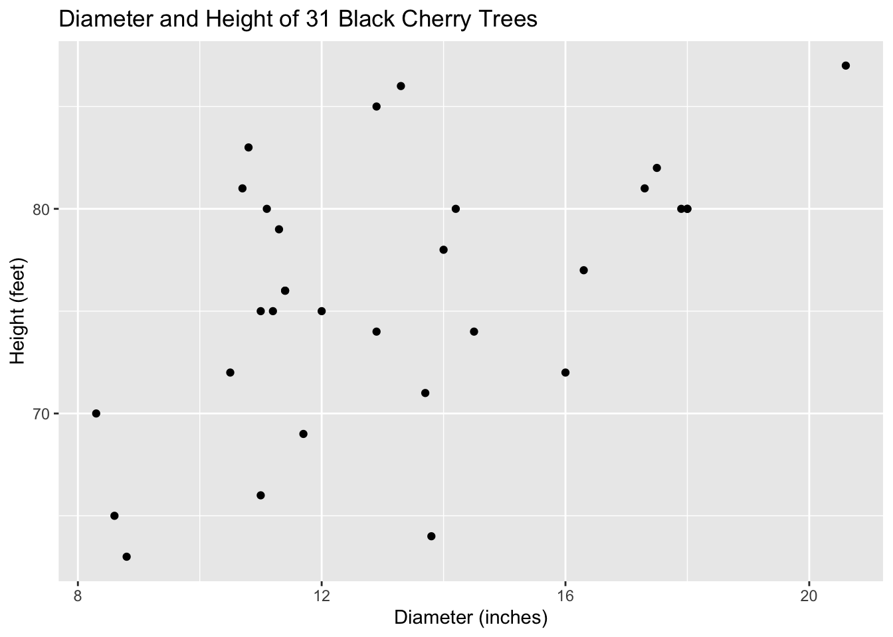
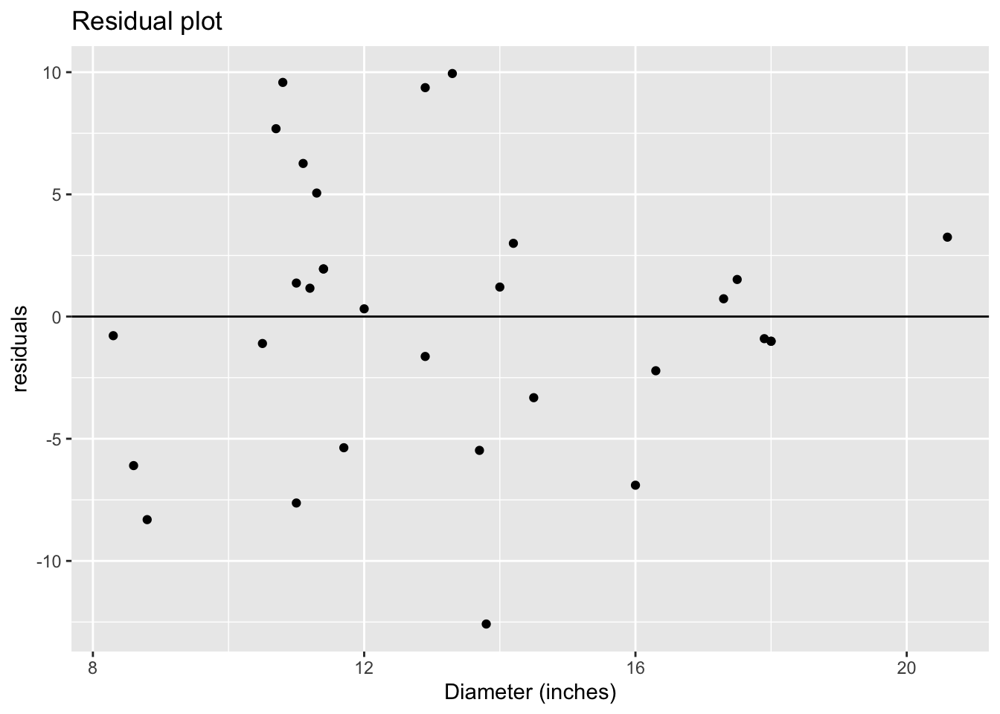
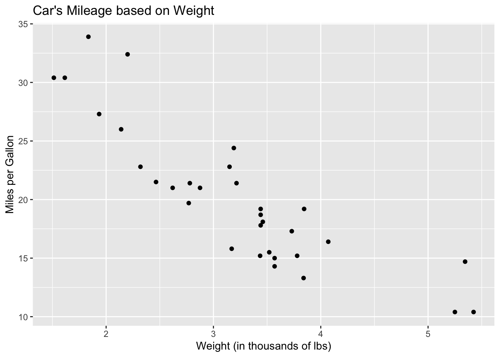
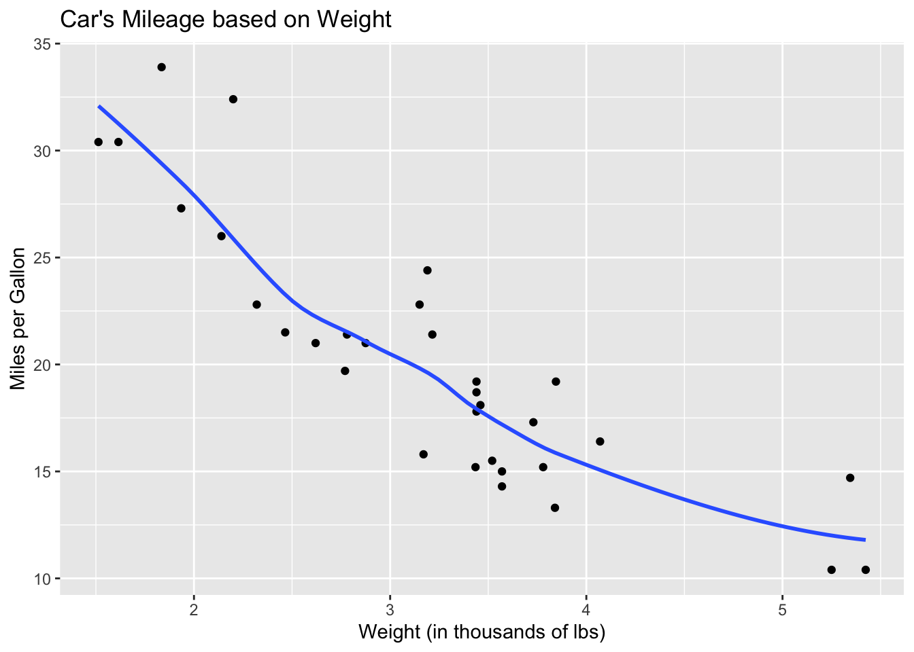
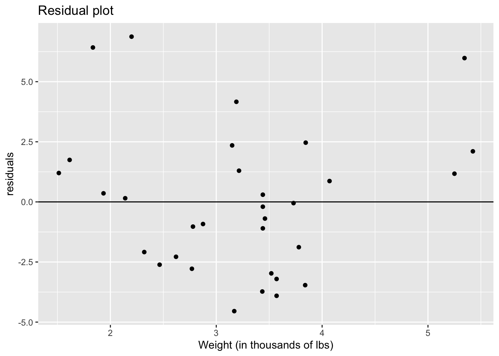

Chapter 4 Linear Models
4.1 Introduction
At this point, you are likely familiar with linear regression. As discussed before, linear regression models are a special case of generalized regression model that we use when the data are normally distributed and have constant variance. We can think of linear regression models in the same terms we think of other regression models.
The two components of a regression model are the random component and the systematic component and for linear regression,
\[ \begin{cases} \text{var}[y_i] = \sigma^2/w_i \\ \mu_i = \beta_0 + \sum_{j=1}^{p}\beta_jx_{ji} \end{cases} \]
where \(w_i\) are prior weights and \(w_i\) and \(\text{E}[y_i] = \mu_i\) are known.
When our linear regression has two \(\beta_j\) coefficients and the systematic compnent looks like \(\mu = \beta_0 + \beta_1x_1\), it is called simple linear regression. If we have more than two \(\beta_j\) coefficients, our regression model is called multiple linear regression model or multiple regression model.
When all prior weights \(w_i\) are equal to one, our regression model is refered to as ordinary linear regression model as opposed to when our prior weights \(w_i\) have values other than one and is called a weighted linear regression model.
As mentioned before, the assumptions belonging to linear regression are:
- The relationship between \(\mu\) and each explanatory variable is linear.
- The unexplained variation in our response is constant, otherwise known as constant variance.
- Each datam is independent of all other data points.
4.2 A “Good” Example of Simple Linear Regression
trees is a data set that comes with R. It has three variables, the diameter (mistakenly named girth in the data set), height and volume of each of the thirty-one trees in the data set. If we just type data(trees) into the Console, R will retreive it for us. This is the data set I’m going to use to showcase a good example of simple linear regression. At this time, let’s also make sure we have the tidyverse (which includes ggplot for graphing) loaded.
library(tidyverse)
data(trees)
# Let's change the name from Girth to Diameter:
trees <- trees %>%
mutate(Diameter = Girth) %>%
select(-Girth)
head(trees)## Height Volume Diameter
## 1 70 10.3 8.3
## 2 65 10.3 8.6
## 3 63 10.2 8.8
## 4 72 16.4 10.5
## 5 81 18.8 10.7
## 6 83 19.7 10.8Let’s look at the scatterplot between these two variables, Diameter and Height.
ggplot(trees)+
geom_point(aes(x = Diameter, y = Height))+
xlab("Diameter (inches)")+
ylab("Height (feet)")+
ggtitle("Diameter and Height of 31 Black Cherry Trees")
When plotting the explanatory variable (Diameter) against the response variable (Height), we are looking for linearity, since that is one of our conditions of fitting a linear model to our data. Though the relationship between these two variables seems to be moderate or moderately-weak, it does indeed look linear.
The next condition is constant variance, which we evaluate by looking at the residuals. We first need to produce those residuals which we do by fitting the model. The lm function automatically saves residuals, among other information, about the model:
##
## Call:
## lm(formula = Height ~ Diameter, data = trees)
##
## Residuals:
## Min 1Q Median 3Q Max
## -12.5816 -2.7686 0.3163 2.4728 9.9456
##
## Coefficients:
## Estimate Std. Error t value Pr(>|t|)
## (Intercept) 62.0313 4.3833 14.152 1.49e-14 ***
## Diameter 1.0544 0.3222 3.272 0.00276 **
## ---
## Signif. codes: 0 '***' 0.001 '**' 0.01 '*' 0.05 '.' 0.1 ' ' 1
##
## Residual standard error: 5.538 on 29 degrees of freedom
## Multiple R-squared: 0.2697, Adjusted R-squared: 0.2445
## F-statistic: 10.71 on 1 and 29 DF, p-value: 0.002758We can view those residuals by typing head(mod$residuals), let’s just look at the first six to get an idea of them.
## 1 2 3 4 5 6
## -0.782575 -6.098886 -8.309759 -1.102186 7.686940 9.581503Next, we should view the actual residuals to check for normality and constant variance.
ggplot()+
geom_point(aes(x = trees$Diameter, y = mod$residuals))+
geom_hline(yintercept = 0)+
xlab("Diameter (inches)")+
ylab("residuals")+
ggtitle("Residual plot")
When examining the residual plot, we are looking for two things: randomness and constant variance. Both are indications that our residuals are \(N(0,\sigma^2)\). If we don’t see randomness, i.e. there is a pattern, that indicates that are data are not linear. Constant variance is a necessary condition because when we assume the residuals are \(N(0,\sigma^2)\), the variance parameter is one estimate, \(\sigma^2\). If we see the variance of the residuals changing, then that indicates that the one variance parameter isn’t sufficient and since a normal distribution only has one variance parameter, it might not be the best model for the data.
There does not seem to be a pattern to the residuals, so they look random. This again suggests our data are linear. As for constant variance, however, it seems have more variation in the middle than we do at the ends of our graph. It isn’t too bad though and we can proceed.
Our last condition is independence. We evaluate independence by looking at how the data were collected. We can find out more information about the trees data set by typing ?trees into the Console, which will bring up the help file on the data set. This data comes from 31 black cherry trees, felled for timber. Though we don’t have much information, the trees could be independent if they were randomly selected to be measured.
The trees data set isn’t perfect for linear regression, but it meets most of our assumptions. I’ll now move on to an example of linear regression with a data set that is not linear.
4.3 A “Bad” Example of Simple Linear Regression
First, we load in the mtcars data set, look at the first six obervations of each variable.
## mpg cyl disp hp drat wt qsec vs am gear carb
## Mazda RX4 21.0 6 160 110 3.90 2.620 16.46 0 1 4 4
## Mazda RX4 Wag 21.0 6 160 110 3.90 2.875 17.02 0 1 4 4
## Datsun 710 22.8 4 108 93 3.85 2.320 18.61 1 1 4 1
## Hornet 4 Drive 21.4 6 258 110 3.08 3.215 19.44 1 0 3 1
## Hornet Sportabout 18.7 8 360 175 3.15 3.440 17.02 0 0 3 2
## Valiant 18.1 6 225 105 2.76 3.460 20.22 1 0 3 1Now, let’s take a look at a scatterplot of two variables in mtcars.
ggplot(mtcars)+
geom_point(aes(x = wt, y = mpg))+
xlab("Weight (in thousands of lbs)")+
ylab("Miles per Gallon")+
ggtitle("Car's Mileage based on Weight")
We can see that this graph looks mostly linear, there seems to be a strong, negative relationship between a car’s weight and and its mpg. There is some nonlinearity because of the three points for cars with a weight above 5,000 lbs; the graph look a bit curved so we should be cautious as we proceed.
If we add a smoothed line to the plot, we can see that it is indeed curved.
ggplot(mtcars)+
geom_point(aes(x = wt, y = mpg))+
geom_smooth(aes(x = wt, y = mpg), se = FALSE)+
xlab("Weight (in thousands of lbs)")+
ylab("Miles per Gallon")+
ggtitle("Car's Mileage based on Weight")
This graph addresses one of the assumptions of linear regression: linearity. Next, let’s check whether there is constant variation. We do this with a residual plot. First, we have to fit a model to our data in order to obtain residuals.
To fit a model, we use the lm function.
##
## Call:
## lm(formula = mpg ~ wt, data = mtcars)
##
## Residuals:
## Min 1Q Median 3Q Max
## -4.5432 -2.3647 -0.1252 1.4096 6.8727
##
## Coefficients:
## Estimate Std. Error t value Pr(>|t|)
## (Intercept) 37.2851 1.8776 19.858 < 2e-16 ***
## wt -5.3445 0.5591 -9.559 1.29e-10 ***
## ---
## Signif. codes: 0 '***' 0.001 '**' 0.01 '*' 0.05 '.' 0.1 ' ' 1
##
## Residual standard error: 3.046 on 30 degrees of freedom
## Multiple R-squared: 0.7528, Adjusted R-squared: 0.7446
## F-statistic: 91.38 on 1 and 30 DF, p-value: 1.294e-10Among other things, the lm function saves the residuals.
## Mazda RX4 Mazda RX4 Wag Datsun 710 Hornet 4 Drive
## -2.2826106 -0.9197704 -2.0859521 1.2973499
## Hornet Sportabout Valiant
## -0.2001440 -0.6932545We can plot the residuals against the weight and look for randomness and constant variance.
ggplot()+
geom_point(aes(x = mtcars$wt, y = fit$residuals))+
geom_hline(yintercept = 0)+
xlab("Weight (in thousands of lbs)")+
ylab("residuals")+
ggtitle("Residual plot")
The graph above seems to have a curved pattern. The cars that weigh the least have large residuals, all above the zero line. The residuals of the cars that weigh between 2,250 and 4,250 lbs are lower and seem to be centered on the zero line. The cars that weigh the heaviest also have large residuals. So, there seems to be a parabola shape to our data, indicating nonlinearity.
As for constant variance, we could go either way. As we look at different car weights, the distance between the top-most point and the bottom-most point is fairly similar indicating we could have constant variance. That might be enough evidence for some folks, but others might point out that the though the cars that weigh the least and the cars that weigh between 2,250 and 4,250 lbs are similar, cars that weigh the most have very small variance comparatively.
Lastly, we need independence. We evaluate independence by checking the data and how it was obtained. If you type ?mtcars into the Console, the Help file with pop up for the mtcars data set. Here, we learn that the data came from a 1981 textbook on biometrics. While there isn’t much information on the data here, we can look to the data for answers. The data records many different attributes of certain make and models of cars. In general, one car of a particular make and model is unlikely to influence the attributes of another car. The only exception I can think of is cars of the same make. Perhaps two cars made by Mazda might not be totally independent, but this would be a more serious concern if we had observations of two cars with the same make and model but different years. So, this last condition is likely met.
In general, using wt to explain mpg in the mtcars data set could have gone worse. The violations of the assumptions were quite small and some folks might find that thee transgressions to be ignorable. We should not take violations lightly, however, especially since there are steps we can take if our data isn’t meeting the assumptions. Transformations are always an option but if we have data of a particular kind, e.g. binary data or count data, we can use generalized linear models instead.
4.4 Summary
Often we want to fit our data with a model to better understand our response variable or to try to predict new events. The ideal case (because it is common, widely used and easy to interpret) is that we can fit a linear model to the data. In order to do so, the relationship between the response variable and the explanatory variable(s) needs to be linear, we need to have constant variance, and the data needs to be independent.
If these condtions are not met, then there are steps we can take. One of which is transformations, we will not be going over that. The other is to fit a generalized linear model, which doesn’t necessarily assume the data come from a normal distribution.